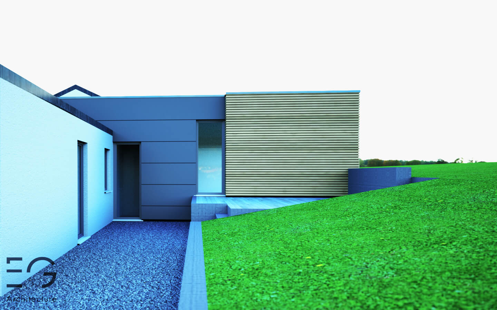
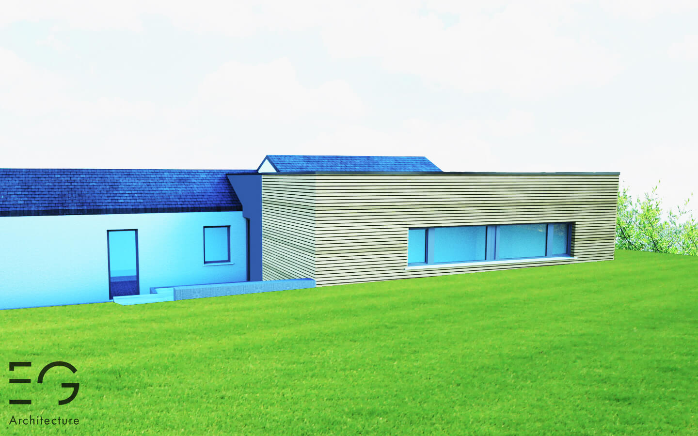

Le souhait du maitre de l’ouvrage était de bénéficier d'une chambre supplémentaire dans l'habitation existante.
L’extension est accessible depuis l’espace de vie par un escalier de quelques marches. La nouvelle extension à toiture plate étant partiellement enterrée, cette différence de niveau permet de bénéficier d’un maximum de luminosité dans les chambres. Les ouvertures du côté de la terrasse ont une tendance verticale. Seule l’ouverture au niveau de la façade arrière, partiellement enterrée, est horizontale.
L’ensemble se distingue et s’harmonise parfaitement avec les façades existantes en crépi gris clair. La volumétrie simple, les teintes similaires aux maisons voisines et la conservation du relief permettent à cette extension d’être intégrée à son environnement et au bâtiment existant.
Projet précédent Projet suivant